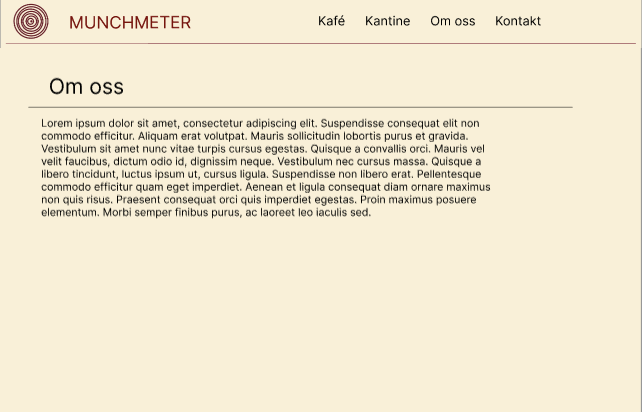
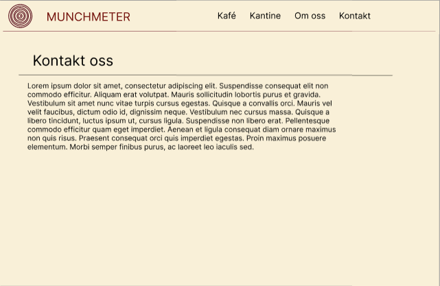
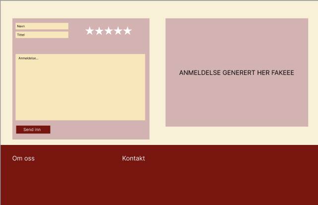
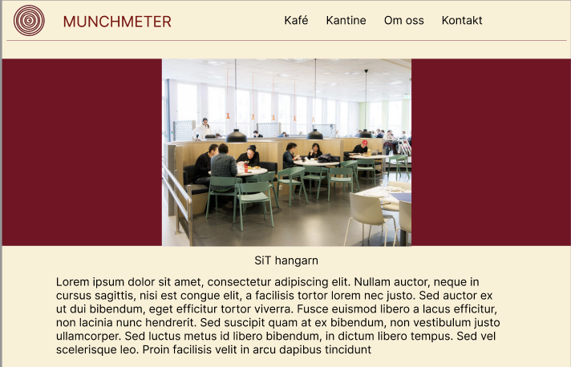
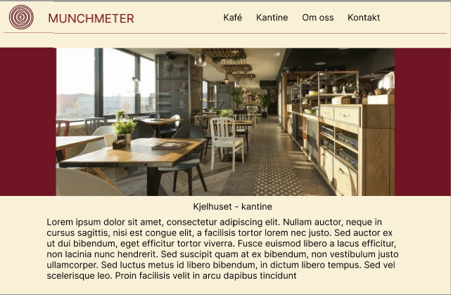
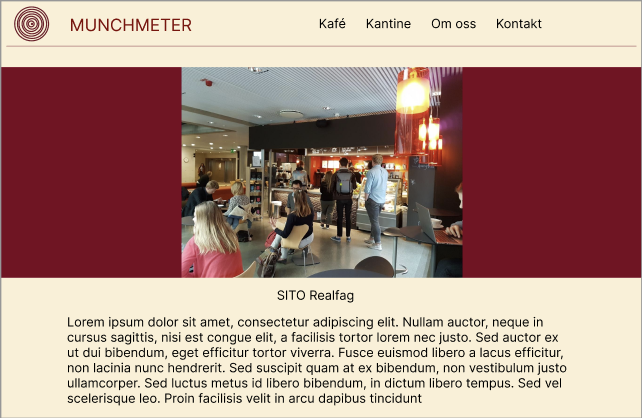
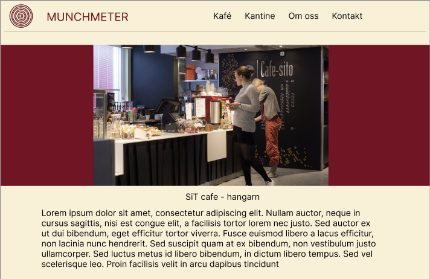
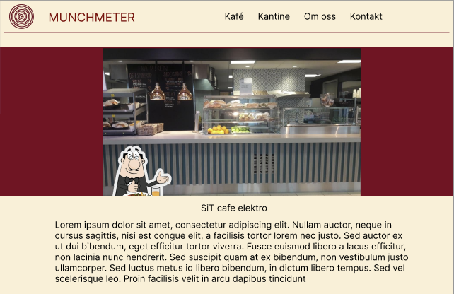

Målet med å lage en nettside for Ola Nordmann, en andreårsstudent innen
bioteknologi ved NTNU i Trondheim, er å hjelpe ham med å takle hans
ustrukturerte og ubesluttsomme natur når det gjelder valg av kantine
eller kafé på Gløshaugen campus. Hensikten er å gi Ola en enkel og
effektiv løsning for å finne ut hvilken spisested som tilbyr det beste
matutvalget på campus. Dette vil spare Ola verdifull tid og energi, som
han ellers bruker på studier og helgejobbing, samt på å utforske naturen
rundt Trondheim på fjellturer. Ved å tilby en oversikt over kantina,
kiosken og kafeene på Gløshaugen med vurderinger, menyer og
åpningstider, kan nettsiden hjelpe Ola med å ta raske og informerte
beslutninger om hvor han skal kjøpe mat, slik at han kan optimalisere
studieopplevelsen sin og fritiden sin på en mer balansert måte.
Navigasjon struktur
Navigasjonsstrukturen på nettsiden til Olav Nordmann kan beskrives som
en "klikke". På denne nettsiden er alle sidene koblet sammen på en måte
som gjør det enkelt å få tilgang til alle sidene fra hjemmesiden, og
omvendt, det er mulig å komme til hjemmesiden fra hver side gjennom bruk
av navigasjonsmenyen. Selv om lenkene for hver nettside ikke er synlige
før de pekes på, er de inkludert på hver side. Årsaken til at vi valgte
en klikke-struktur er å gi brukeren så mye frihet som mulig på nettsiden
og å gjøre ham/henne oppmerksom på den generelle strukturen og innholdet
på nettsiden uten å vise alt. For eksempel kan en bruker på siden
Kantine.html enkelt få tilgang til underordnede sider innen andre
kategorier, som for eksempel Kafe.html-siden, ved å bruke den enkle
rulle-menyen.
Figure 1: Navigasjons struktur for hjemmesiden
Page Layout and Appearance
Teksttype: Verdana
Tekststørrelse:
Bakgrunnsfarge: #FDF0D5
Tekstfarge: #800020 og svart
Footer-farge: #800020
Skygge: grå
Navigasjonbaren ligger øverst på nettsiden og har bakgrunnfarge #FDF0D5, og tekstfarge #800020 og svart. I tillegg
blir den gjennomsitkig når man scroller ned på siden. Vi har laget en logo med navn: MunchMeter som er plassert
øverst til venstre i navigasjonsbaren. Vi har også med logoen i bilde-slideshowet med slogan: Oh hungry? Oh munchmeter.
Footer har farge #800020 og inneholder litt om oss, kontakter, sosiale medier og å melde seg på nyhetsbrev til nettsiden.
Bildene vi skal bruke skal være i et slideshow som går gjennom alle bildene av kaféne og kantinene, og på
hver nettside til hver kantine/kafé skal det vises bilder av maten som serveres.
Vi valgte å bruke fargen #800020, rød, fordi rød gjør så du får appetitt. #FDF0D5, gulfargen, ble valgt fordi
den passet bra med rødfargen og gjorde siden mer livlig. Utseende er generelt nokså tiltrekkende slik at studentene
ønsker å klikke inn.
Content
Det vil bli ca. 9 separate nettsider
Hjemmeside - homepage.html
Hjemmsiden skal være den første siden brukeren kommer til når den trykker inn på
nettsiden. Det skal være en introduksjon til hva som kan forventes av nettsiden og hva
den handler om. Øverst skal det ligge en navigasjonsbar som brukeren enkelt kan bruke
til å gå videre til andre deler av hele nettsiden - andre sider til hver kafe eller kantine
som finnes på Gløshaugen.
Under navigasjonsbaren skal det være et slideshow med bilder av de forskjellige kantinene
og kafeene på Gløshaugen for å gjøre det interassent for brukeren, og eventuelt så interessant
at brukeren ønsker å fortsette videre/dypere inn i nettsiden og dens funksjoner.
Under der igjen skal det stå en slags velkomst til nettsiden og litt generell informasjon
om hva nettsiden går ut på, altså anmeldelser av mat og kantiner/kafeer på Gløshaugen.
Nederst skal det være en footer med informasjon om oss, kontakter, sosiale medier og
å melde seg på nyhetsbrev om man ønsker litt ekstra informasjon etter hvert som det
kommer ut.
Figure 2: Mockup av homepage.html
Om oss - omoss.html
(...)

Figure 3: Mockup av omoss.html
Kontakt oss - kontakt.html
(...)

Figure 4: Mockup av kontact.html
Element - element.html
(...)
Figure 5: Mockup av element.html
Standard review side for alle kantine og kafe
Vist i figur 6, vil denne layouten være en standard for alle sider for restaurant eller kafe.
Det vil være to bokser, en form boks på venstre side og en boks på høyre side som viser anmeldelse fra andre studenter.
Form boksen på venstre side vil kunne gi muligheten til å legge inn egne anmeldelser.
I denne boksen skal brukeren legge inn navn, og tittel, samt rate kantine/kafeen ved å legge inn andel stjerner.
Til slutt vil brukeren kunne «sende inn» en anmeldelse. Boksen til høyre vil generere ulike
anmeldelser sendt fra andre studenter.

Figure 6: Standard review
Hangarn - hangarn.html
(...)

Figure 7: Mockup av hangarn.html
Kjelhuset - kjelhuset.html
(...)

Figure 8: Mockup av kjelhuset.html
SITO Realfag - Sitcafe_realfag.html
(...)

Figure 9: Mockup av Sitcafe_realfag.html
SITO Hangarn - Sitcafe_hangarn.html
(...)

Figure 10: Mockup av Sitcafe_stripa.html
Sit kafe elektro - Sitcafe_elektro.html
På denne siden, vist i figure 11, vil informasjon om cafe elektro være tilgjengelig for brukeren.
Dette er vist med fake text. Det vil si informasjon om hva cafe elektro kan tilby av mat, samt anmeldelse fra tidligere
studenter og muligheten til å legge inn anmelde selv. Dette er beskrevet tydeligere i «Standard review side for alle kantine og kafe».
I sit cafe elektrobygget, vil også navigationsbar være mulig å benytte for brukeren. Slik at brukeren kan navigere til andre
sider dersom cafe elektro ikke appellerer. Til slutt skal en footer være nederst på siden, med samme beskrivelse som vist i
figur 2 for hjemmesiden.

Figure 11: Mockcup av Sitcafe_elektro.html
Minimum Requirements
Plan
Organiseringsplan
Alle følgende filer vil være samlet under mapper, som vil bli dannet under den kodende fasen av prosjektet.